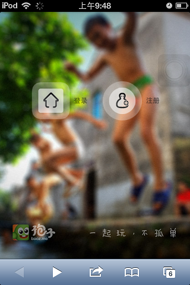

关于用户体验，我们经常听到这样的言论，除非到了非注册不可的时候，才让用户注册账号。过早地强迫用户注册，只会吓走用户。以今天看到的一个站点孢子社区为例，首页是一张背景图片，一张 LOGO 图标，一个登陆按钮和一个注册按钮，可谓非常简洁。“孢子”这个名字对我来说比较亲切，我挺喜欢玩《植物大战僵尸》，里面有个孢子射手。背景图片也很亲切，是一群光着身子的小孩子欢笑跳跃，对我也说，也非常亲切，我很想知道这个网站是干什么的，但是孢子社区的首页并没有告诉我，而是在门口安排了两个保安（登录按钮和注册按钮），要检查我的身份证，刚才提及的亲切感顿时灰飞烟灭。

当我意识是他们强迫我注册，才让我不想进去看看里面有什么东西的，并且我又临时决定写这样一篇博客时，我决定去注册一下，去看看里面有什么东西。注册页面也挺简单：要填写一个邮箱，一个昵称，和一个密码。注意这里并没有要我再填写一次密码，这是最近比较流行的注册方式。顺便看看内容，还好。其中一个图片令人捧腹，所谓百鸟朝凤，图片有色。
使用一小段时间之后，发现都不是非注册不可。我不发帖不留言。所以该网站就因为首页的注册按钮丢失了我这个潜在的用户。
本公司是一家家电产业的公司，生产基于 Android 系统的手机，相机，电视等，为了丰富他们的使用价值，希望吸引开发者多多开发其上的应用。但是考虑到如下因素，以电视机为例，为了开发电视机上的应用，不是每个个人开发者都可以去买一台电视机，也不是每家公司都有足够电视机供员工调试开发使用。所以本公司就想开发一个模拟应用，称之为应用 D，它能够模拟电视机开放出来的接口。我的建议很简单，用户打开应用 D 以后，就看到一堆可以申请的设备，包括电视机，相机等，一键申请设备之后，就会显示在用户设备列表中，用户就可以使用他们。当用户关掉应用 D，所有的设备都消失，当应用再次打开应用 D 时，需要重新申请才可以继续使用。当然如果感觉这样比较麻烦，那么可以在应用 D 本地数据中保留用户已经申请的设备，使得用户再次打开应用 D 时，可以看到以前申请的各种设备。但公司领导还是希望用户打开应用 D 之后，首先注册账号，以便把申请的设备保存到服务器端，然后本公司可以跟踪用户喜欢申请那些设备，以及使用时间长短等等。我也提出，这些问题也可以通过记录用户的操作，比如点击申请等来跟踪，但是注册不是必须的。还有很重要的一点，如果你要用户注册账号，你就要保证用户账号安全。近几年来，已经发生了不少大公司用户信息被盗取的案例。不幸的是本公司也在其列。
面对每天要登录的各种应用各种网站，我总是在想，苹果拥有那么多终端，那么多的用户账号，为什么不提供一种功能，类似 Open ID，不管是网页还是本地 APP，开发者只需要一个添加一句话，甚至只要在 APP 的配置中给予权限，用户就可以使用 Apple ID 一键该网站或者 APP。这是一种多么令人向往的美好。
关于 Open ID，国内用的比较多的，当属新浪微博，腾讯 QQ，校内网等等。令人郁闷的是很多网站在我使用 Open ID 首次登录以后，还让我填写昵称和邮箱，他妈的这和我重新注册账号有什么区别？？？使用新浪微博账号登录以后，还很有能会在我不知情的情况下，替我发条微博，趁机给自己的产品做个广告。让我的隐私暴露的体无完肤啊！！！你们能有点节操吗？
顺便吐槽一下海丁网，每次报名参加一次讲座的时候，都要填写邮箱，手机号码，职位和公司名称。我从来没有见过这么 SB 的网站。
标题中还有一个词叫做注册强迫症，就是我看到一个新的网站，就想使用我的常用 ID 把它注册了。我有轻微的强迫注册症，但是这不妨碍我讨厌被强迫注册。我有三个常用 ID，第一个是被逼的没办法只能注册时，或者对网站内容或者网站所有者不屑时使用的 ID，再或者像上一段中提及的那些没有节操的网站，即便当时填写了一些个人信息，你可以想象，有多大的可信度，有多大的数据挖掘价值。第二个是全世界唯一的 UUID，用于常用 ID 已经被注册的情况。第三个是我真实姓名，用于我很喜欢的一些网站。有时候最初觉得某个网站不好，所以没有使用真实姓名注册，而后来越来越觉得好时，我还会使用真实姓名注册下来。我也会因为没有使用我的真实姓名注册到 gmail 邮箱而遗憾。所以从我的个人习惯来看，强迫用户注册真不是好主意。
真是希望网站开发者或者老板能够认识到这一点，你有好用的产品，有有价值的内容，还怕没有用户？